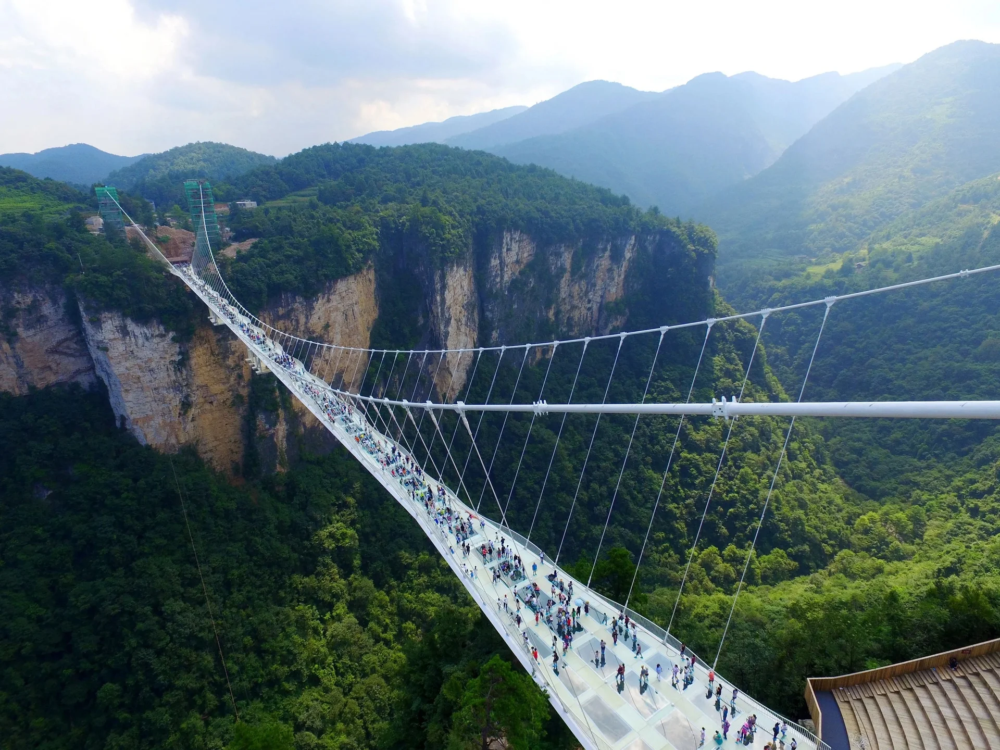

Điểm đến nổi bật

Sa Pa
Sa Pa, với không khí mát mẻ quanh năm, nổi tiếng với những ruộng bậc thang bạt ngàn, dãy núi Hoàng Liên Sơn và đỉnh Fansipan - nóc nhà Đông Dương. Đây là nơi lý tưởng để trải nghiệm văn hóa của người H’Mông và Dao Đỏ.

Điện Biên Phủ
Điện Biên Phủ gắn liền với chiến thắng lịch sử, nơi lưu giữ nhiều di tích quan trọng. Du khách có thể khám phá bảo tàng, hầm Đờ-cát và tận hưởng cảnh sắc tuyệt đẹp của thung lũng Mường Thanh.

Mộc Châu
Với những đồi chè xanh mướt, cánh đồng hoa cải trắng và vườn mận nở rộ vào mùa xuân, Mộc Châu mang lại cho du khách cảm giác thư thái. Đây là địa điểm lý tưởng cho những ai muốn hòa mình vào thiên nhiên.